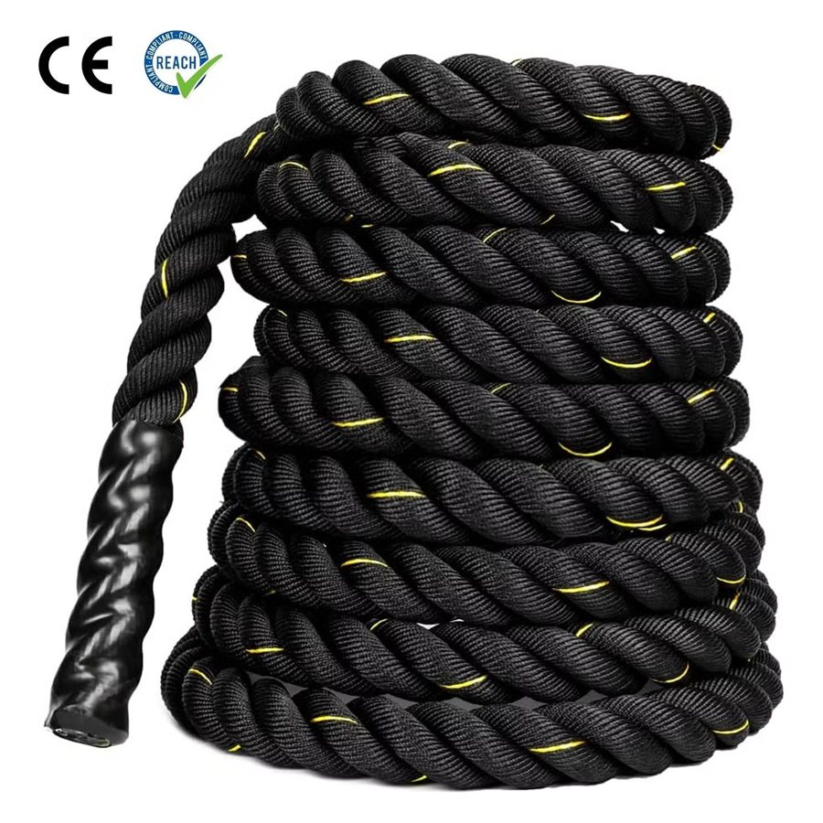
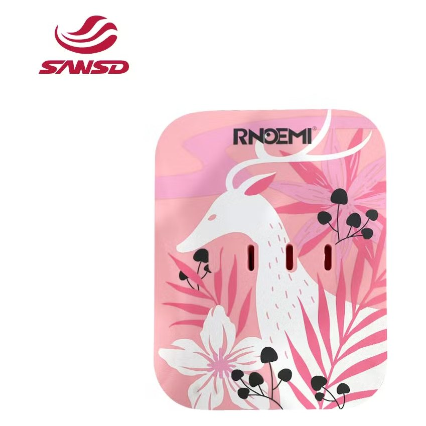
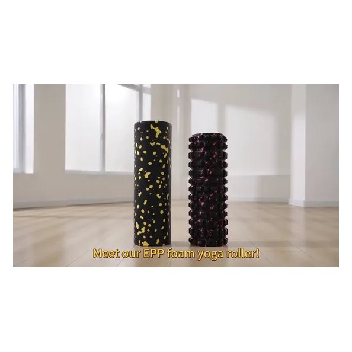

Start / Sport & Fitness / Pickleball-Set (2 Schläger Carbon, 4 Bälle)

Abbildung ähnlich – zeigt den Produkttyp.
Sport & Fitness
Pickleball-Set (2 Schläger Carbon, 4 Bälle)
Das Set enthält zwei Pickleball-Schläger mit Carbon-Deckschicht und Polymer-Wabenkern (PP/MPP/EPP) sowie vier Bälle.
Technische Daten
| Set-Inhalt | 2 Schläger + 4 Bälle; Tasche/Cover optional (Verpackung: PP-Beutel + Karton oder Cover) |
|---|---|
| Schlägergewicht | 225 g ± 5 |
| Deckschicht | Carbonfaser oder Glasfaser; 3K / 12K / 18K |
| Kern | Polymerkern PP / MPP / EPP |
| Kerndicke | 11 / 13 / 16 mm |
| Oberfläche | Matt oder glänzend, mit oder ohne Sandstruktur |
| Bälle | 4 Stück |
| Zolltarifnummer (HS) | 95065900 |
EU-Normen und Vorschriften
(EU) 2023/988GPSR: EU-Verantwortlicher, Los-/Typenkennzeichnung, SicherheitshinweiseREACH (EG) 1907/2006Anhang XVII Nr.; 50 (PAK in Griffen/Kunststoffteilen) und SVHC-Kandidatenliste2009/48/EG + EN 71Spielzeugrichtlinie: gilt nicht für Sportgeräte; nur relevant, wenn das Set für Kinder unter 14 Jahren vermarktet wirdUSA Pickleball (früher USAPA)VerpackG / LUCID
Passt dazu

Weitere Produkte dieser Kategorie

Walking Pad, faltbar (0,8–8 km/h, 0,75 PS, Unterschreibtisch-Laufband)Flaches, klappbares Laufband für Homeoffice und Wohnzimmer mit LED-Anzeige, App-Anbindung und leisem Motor.

Massagepistole, bürstenlos (LED-Anzeige, Wechselakku, mehrere Aufsätze)Bürstenlose Percussion-Massagepistole mit LED-Anzeige, Wechselakku, Aufsätzen und Geschenkbox.

Verstellbare Kurzhanteln, Paar (Drehregler-System, bis 2 × 24 kg)Zwei Drehregler-Kurzhanteln mit 15 Gewichtsstufen von 2,5 bis 24 kg und Ablageschale, ersetzt ein ganzes Hantelset.

Yogamatte TPE, 6 mm, doppellagig, ca. 183 × 61 cm, mit Tragegurt

Widerstandsbänder-Set (Latexbänder in 5 Stärken, Pull-up-/Loop-Typ, mit Türanker)Naturlatex-Bänder von X-Light bis X-Heavy mit Türanker für Kraft-, Mobility- und Reha-Übungen.

Faszienrolle / Schaumstoffrolle EPP, strukturiert (Wabenmuster), ca. 33 cmFormstabile EPP-Rolle mit Wabenstruktur für Selbstmassage und Regeneration nach dem Training.

Speed-Springseil, verstellbar (Alu-Griffe, PVC-ummanteltes Stahlseil, ca. 270 cm)

Klimmzugstange für Türrahmen, ohne Bohren (Stahl, Schaumstoff-/TPR-Griffe)Stahl-Klimmzugstange für den Türrahmen ohne Bohren als klassischer Einstieg ins Eigengewichtstraining.

Pilates-Ring, Magic Circle (ca. 36 cm, Schaumstoffgriffe)Widerstandsring für Pilates, Beine und Rumpf, mit gepolsterten Griffen.

Battle Rope, 15 m / 38 mm (Nylonhülle, Griffe)Schlagseil für Functional Training und HIIT.

Laufgürtel / Running Belt (wasserabweisend, Handyfach)Schlanker Hüftgürtel für Handy, Schlüssel und Karten beim Laufen.

Boxhandschuhe PU-Leder, 12 oz (Klettverschluss)Trainingshandschuhe für Sparring und Sandsack.

Plyo Box, Schaumstoff, 3-in-1Weiche Sprungbox für Plyometrik und Step-Training.

Schwimmbrett EVA (Kickboard)Auftriebsbrett für Beintechnik im Schwimmtraining.

Dip-Station / Dip-Barren, StahlFreistehende Dipstation für Trizeps, Brust und Core.

Massageball-Set (Lacrosse- und Erdnussball, EPP/Silikon)Kompakte Faszienbälle für Triggerpunkte und Rücken.